In this work, we aim to improve the design space of vanilla pixel diffusion transformers along two aspects:
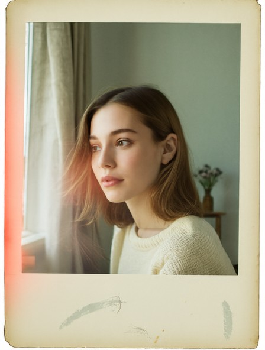
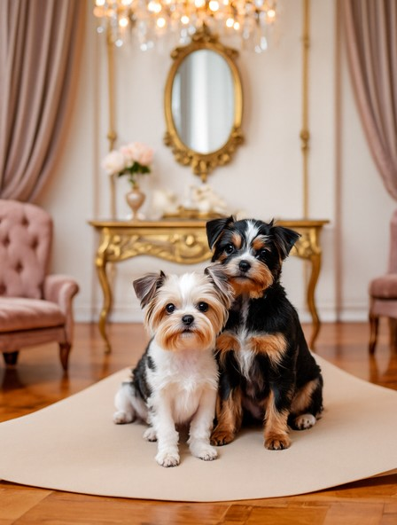
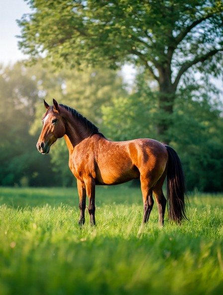
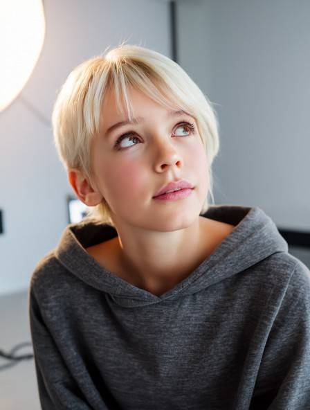
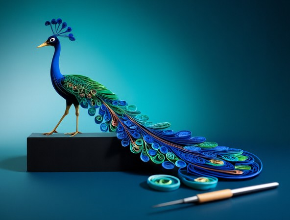
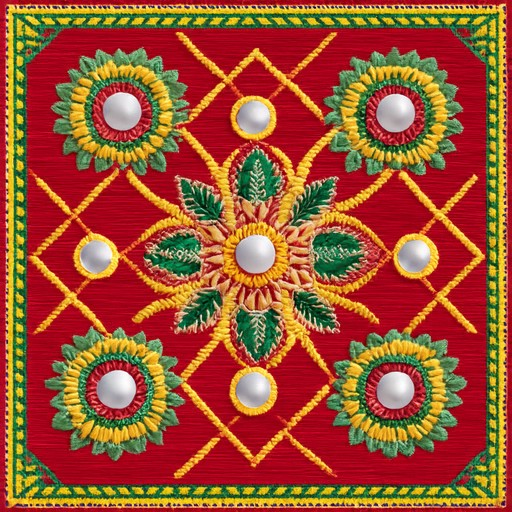
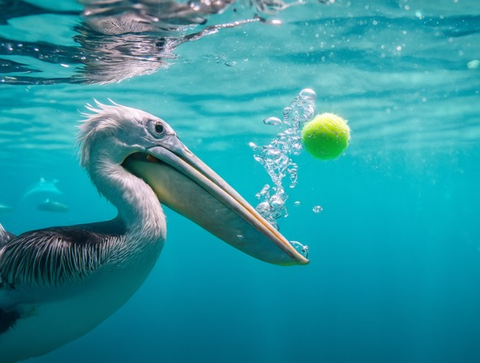
Text-to-image samples from MFlow‑XXL/16 (13B‑MoE, 2.9B active). Click any image to enlarge.
Pixel-space diffusion models have recently re-emerged as a compelling alternative to latent diffusion, avoiding the lossy latent bottleneck and separately trained autoencoder. JiT shows that a vanilla diffusion transformer can generate directly in pixel space by replacing the commonly used velocity prediction ($u$-prediction) with clean image prediction ($x_0$-prediction). In this work, we revisit this choice and introduce MFlow, an adaptive parameterization that learns to interpolate between $x_0$- and $u$-prediction across principal directions of the data, learned end-to-end with diffusion training. We find that the preferred parameterization varies systematically with the data representation and model capacity — notably, increasing model capacity shifts preference toward velocity prediction. We evaluate MFlow across ImageNet, UCF-101 video, and large-scale text-to-image generation, demonstrating competitive or improved generative performance across diverse settings. In addition, we find that vanilla pixel diffusion transformers, irrespective of parameterization, retain a persistent high-frequency deficit relative to real images. To address this, we introduce ConvRefiner, a lightweight convolutional module trained post-hoc with an adversarial loss while keeping the diffusion backbone frozen. With only a small amount of additional training, ConvRefiner restores the high-frequency statistics of generated images while preserving FID.
Diffusion models must be told what to regress. Most predict the velocity $u = x_0 - \epsilon$; JiT instead predicts the clean image $x_0$, since clean data lies near a low-dimensional manifold while noise spans the ambient space. But converting an $x_0$-prediction back to velocity divides by $1-t$, which blows up near the clean endpoint. AsymFlow patches this by predicting velocity inside a rank-$r$ PCA subspace and $x_0$ outside it — an all-or-nothing choice per direction, with $r$ found by sweeping.
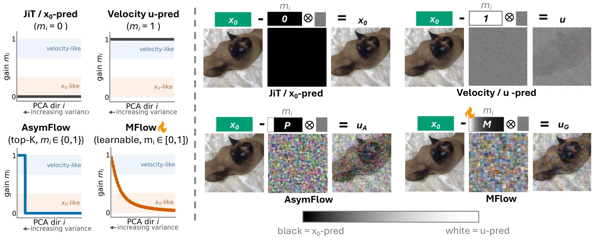
MFlow replaces AsymFlow's binary projector with a graded spectral operator $M = U\,\mathrm{diag}(m_1,\dots,m_D)\,U^\top$ over the patch-PCA basis, and regresses
Since $M$ is generally not a projector, it does not split space into a subspace and its complement — each direction carries its own continuous mix, $\tilde u_{G,i} = \tilde x_{0,i} - m_i\tilde\epsilon_i$. Setting $m_i = \mathbf{1}[i\le r]$ recovers AsymFlow exactly; $m_i\equiv0$ and $m_i\equiv1$ recover the two endpoints.
Crucially these gains can be learned jointly with the network, because velocity stays exactly recoverable from $u_G$ for every $m_i \in [0,1]$ — and for any $m_i>0$ the clean-endpoint singularity that motivated the problem disappears in that direction. The loss is applied in velocity space, not on $u_G$ directly.
The recovery rule, initialization and training details are in the paper and the blog post.
Every parameterization above is just a curve of gains $m_i$. Pick one, or drag the curve yourself, and watch the regression target $u_G = x_0 - M\epsilon$ change for the same image and noise as in the figure: lifting a gain mixes that direction's noise into the target, dropping it to zero predicts the clean image there.
Loading interactive demo…
Plotting the learned gains $m_i$ against PCA direction gives a direct readout of how much velocity prediction the model chose to buy, and where it spent it — 0 means predict the clean image here, 1 means predict velocity. The same recipe produces visibly different answers along four axes.
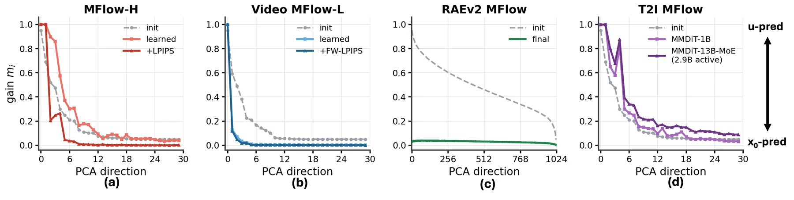
The parameterization is a measuring instrument as much as a method. Some of what it measured surprised us.
Two forces pull against each other. Larger $m_i$ improves conditioning near the clean endpoint, but forces a finite-capacity network to keep more Gaussian noise in its target — hard in high dimensions. So the model is really deciding how much velocity prediction it can afford, summarised by the soft velocity rank $r_{\mathrm{eff}} = \mathrm{tr}(M) = \sum_i m_i$: zero for pure $x_0$, exactly $r$ for rank-$r$ AsymFlow, continuous and learned for MFlow.
Capacity decides how much; the statistics of the representation decide where.
With LPIPS the leading gains stop decreasing monotonically: PC0 and PC1 stay high, PC2–PC3 dip hard, PC4 rises again. The eigenvectors explain the shape — the modes run patch-global, patch-global, spatial, spatial, patch-global, matching high, high, low, low, high.
The giveaway is that this cannot be variance ordering: PC4 has far lower variance than PC2–PC3 ($\lambda_4=3.74$ vs $\lambda_2=9.41$, $\lambda_3=7.93$) yet gets a larger gain. Nor is it simply “LPIPS likes colour” — later chromatic directions that are spatially non-uniform get no boost.
Our reading: squared-error regression shrinks uncertain components toward their mean. For a spatially varying mode that merely smooths a texture; for a patch-global mode it shifts the tone of the whole patch, which LPIPS punishes. We flag this as a plausible interpretation, not an established mechanism.
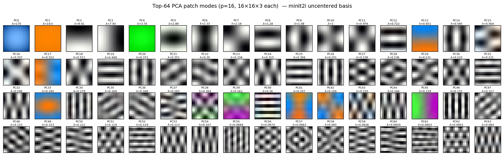
There is a clean argument for spending the velocity budget on the highest-variance directions, and we give it — but it is an initialization prior, not a rule. On ImageNet at B-level a non-leading block beat the leading one, PCA[9:16] reaching FID 3.54 against PCA[1:8]'s 3.59. The non-monotonic LPIPS curve says the same thing differently: an auxiliary objective reorders directions by visual function rather than by variance.
On RAEv2 latents, pure $x_0$-prediction wins (FID 1.05) and MFlow's gains collapse toward zero, confirming that choice. Yet AsymFlow — using full velocity prediction in its leading 8 directions — lands just 0.03 behind at 1.08. The point is not that velocity is better here, but that a small velocity subspace costs almost nothing measurable even where $x_0$ is strongly preferred.
Under an identical velocity-space objective, MFlow reaches a slightly lower training loss than both JiT and AsymFlow at H-level — and this does not reliably show up as better FID. We report it because it is a real negative result: better regression conditioning need not improve distribution-level sample quality, and the underlying reason remains unclear.
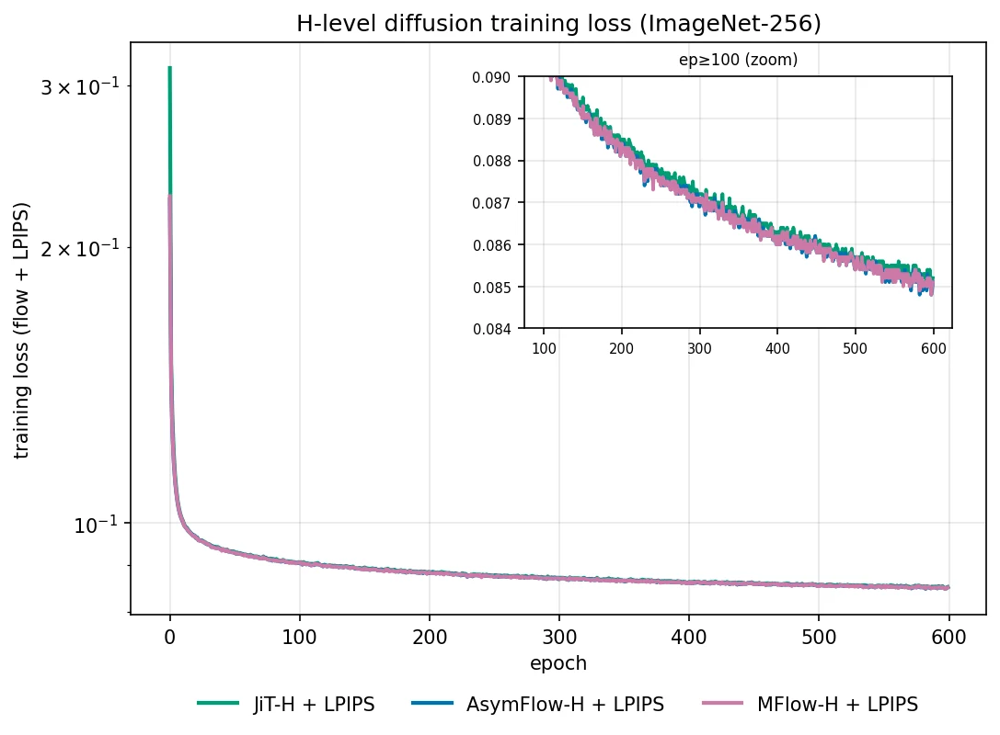
Measured against real images, the radially-averaged power spectrum of JiT-family generations shows a consistent gap at 0.5–0.7 cycles/pixel. It appears in JiT, AsymFlow and MFlow alike, so it is not a parameterization problem.
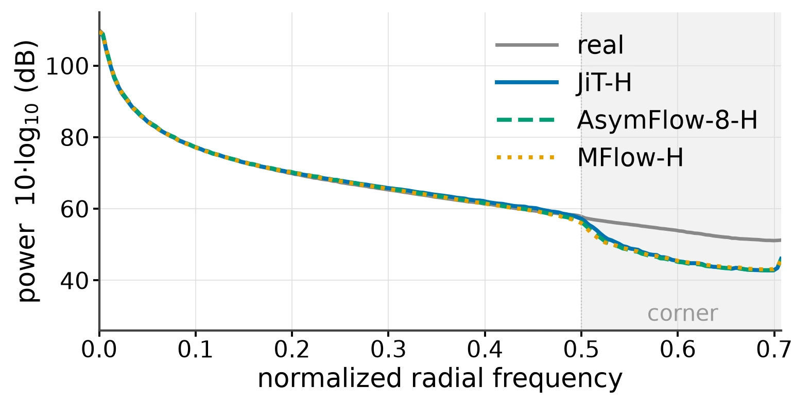
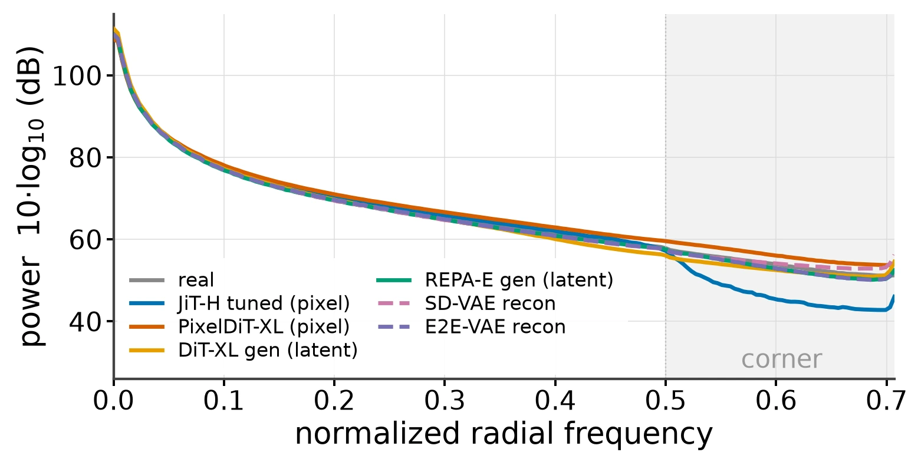
That second panel localises the cause: the deficit is specific to the JiT-style backbone — 16–32× patchification with no intra-patch local operation, tokens mapped back to pixels by MLPs alone. Models with an explicit pixel-level pathway do not have it, and training JiT 5% longer does not change the spectrum at all.
We therefore restore the missing frequencies post hoc. ConvRefiner is a small residual convolutional module predicting a correction on top of the model's $x_0$-prediction. The backbone stays frozen; only four conv blocks and a $t$-conditioned PatchGAN discriminator train, for +30 epochs on a 600-epoch model — 5% extra compute. The adversarial loss is applied only on near-clean samples.
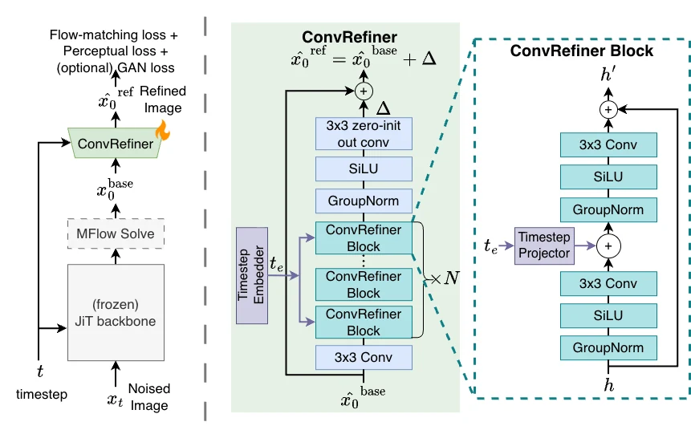
ConvRefiner closes most of the spectral gap and FID does not move at all: the mean radial power deficit for MFlow-H/16 goes from −6.63 dB to −1.29 dB while FID stays at 1.81. That cuts both ways — it is why the fix is free, and it is a warning about the metric.
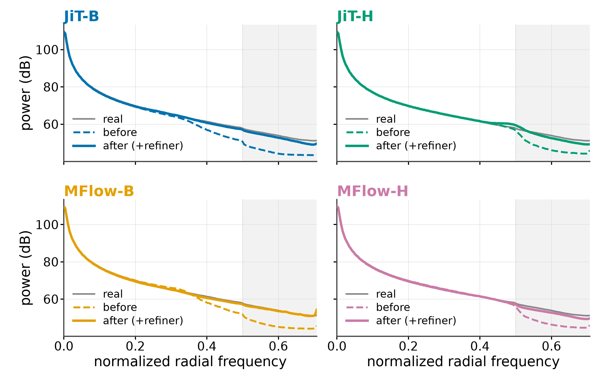
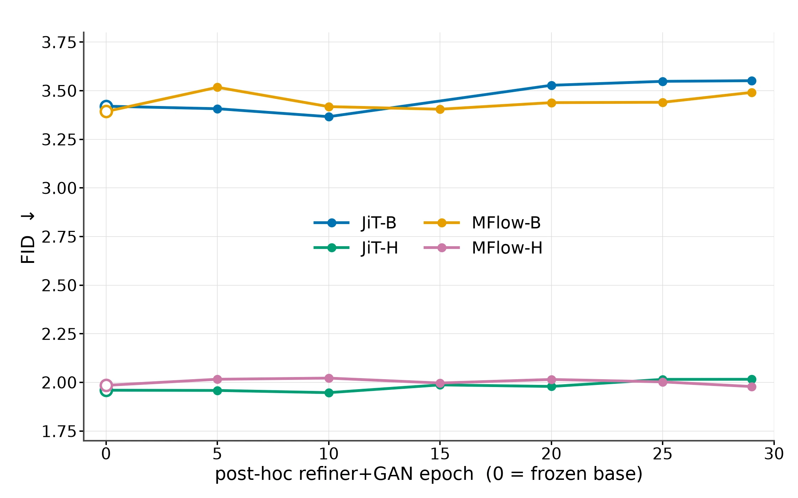
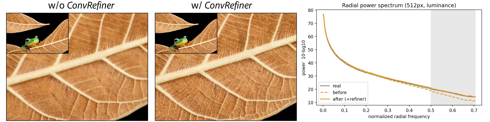
Not every refiner works. Fine-tuning only the unpatchify layer is negligible, as is a residual windowed-attention refiner. The DiP patch-detailer does improve high frequency, but degrades JiT's FID from 3.42 to 3.90 — and to 4.46 with a GAN loss.
Text-to-image samples from MFlow-XXL/16, without and with ConvRefiner. Click or drag on the image to compare; the zoomed panes show the fine texture side by side.
Click or drag on the image to move the divider; the panes zoom in 2× around the circle. Each example opens where the refiner adds the most fine detail.
Text-to-image samples from our MMDiT models and recent pixel-space diffusion models on the same prompts. Each card shows one prompt at a time; use the arrows (or the ← → keys) to step through prompts.
MFlow's gains over strong fixed parameterizations are sometimes modest. One likely reason is that we optimise the gains and the network jointly: the transport target is fixed, but updating $M$ continuously changes the network's output parameterization, so the two can co-adapt against an effectively moving target. Staged or decoupled optimisation of the gains is the obvious next step.
Lower diffusion loss did not reliably translate into better FID, and the cause of this discrepancy remains an open question.
Standard generative metrics do not capture the high-frequency recovery. ConvRefiner closes most of the spectral gap and FID registers no change at all — which says more about the metric than about the module. FID-style distribution distances are insensitive to the local frequency statistics the refiner modifies, so spectral fidelity needs to be reported alongside them rather than folded into them.
@misc{mukhopadhyay2026mflow,
title = {Rethinking the Design Space of Vanilla Pixel Diffusion Transformers},
author = {Mukhopadhyay, Soumik and Mai, Long and Shrivastava, Abhinav and Mahapatra, Aniruddha},
year = {2026}
}